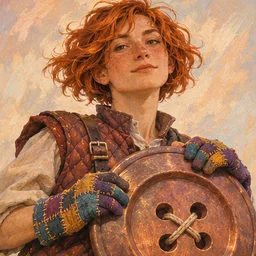
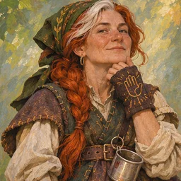
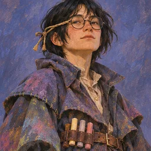
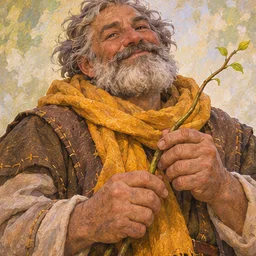
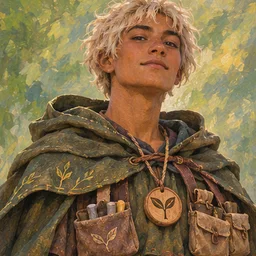
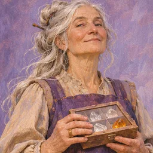

Яра Корин
воин 3 · ОЗ 31 · КД 11 · Скорость 30 фтМастер подвесных настилов, добровольная ладонная гостья
Короткие медные волосы, стёганый жилет, рабочие перчатки с разноцветными заплатами; щит теперь похож на большую пуговицу.
Пришла вернуть Вельде починенную переносную ступеньку и согласилась увидеть дом глазами маленьких соседей.
Открыть фигурку для поля
Оружие и заклинания
Оружие · Длинный меч, Ручной топор
Лис Овст
плут 3 · ОЗ 24 · КД 13 · Скорость 30 фтРисовальщик ремесленных планов, добровольный ладонный гость
Тёмные кудри под плоской шапкой, карманный блокнот, на рукаве следы угля; мягкие сапоги почти не слышны на ткани.
Хочет нарисовать честный план работ, на котором видны не только красивые изделия, но и люди, сделавшие их.
Открыть фигурку для поля
Оружие и заклинания
Оружие · Рапира, Короткий лук

Неда Рыжий Шов
жрец 3 · ОЗ 24 · КД 11 · Скорость 30 фтХранительница дорожного очага, добровольная ладонная гостья
Серебристая прядь в рыжей косе, зелёный платок и оловянная чашка на поясе; на перчатке вышита открытая ладонь.
Знакома с Вельдой по общим обедам и хочет услышать, как маленькие соседи определяют гостеприимство.
Открыть фигурку для поля
Оружие и заклинания
Оружие · Боевой посох
Заклинания · Лечащее слово, Обнаружение магии

Эм Раст
волшебник 3 · ОЗ 20 · КД 12 · Скорость 30 фтУченик прикладного волшебства, добровольный ладонный гость
Прямые чёрные волосы, широкая куртка, мелки в петлях пояса; очки перевязаны тонкой тесьмой.
Пришёл изучать гостевую ткань, но интересуется прежде всего тем, какие правила пользования волшебством удобны самим гостям.
Открыть фигурку для поля
Оружие и заклинания
Оружие · Боевой посох
Заклинания · Обнаружение магии, Туманный шаг

Тавр Липовый
воин 3 · ОЗ 31 · КД 11 · Скорость 30 фтБывший сценический силач и нынешний учитель ремесла, ладонный гость
Крупные ладони, седая борода, жёлтый шарф; привычная трость уменьшилась до гибкого прутика.
Принёс Вельде складное кресло и решил проверить, можно ли научиться новому масштабу, не теряя достоинства.
Открыть фигурку для поля
Оружие и заклинания
Оружие · Длинный меч, Ручной топор
Сея Складка
плут 3 · ОЗ 24 · КД 13 · Скорость 30 фтТеатральная костюмерша, добровольная ладонная гостья
Один рукав в клетку, другой полосатый, лёгкая сумка и булавки с тупыми головками; улыбается перед трудным вопросом.
Искала у Вельды обрезки для костюмов и обнаружила, что переделка чужой готовой работы начинается с разрешения её автора.
Открыть фигурку для поля
Оружие и заклинания
Оружие · Рапира, Короткий лук

Вен Ясень
жрец 3 · ОЗ 24 · КД 11 · Скорость 30 фтСмотритель общего сада, добровольный ладонный гость
Смуглое лицо, короткая светлая стрижка, плащ с карманами для семян; деревянный знак ростка висит на шнурке.
Принёс травы для гостевого чая и хочет понять, какие растения для маленького народа становятся лесом.
Открыть фигурку для поля
Оружие и заклинания
Оружие · Боевой посох
Заклинания · Лечащее слово, Обнаружение магии

Дорна Янтарная
волшебник 3 · ОЗ 20 · КД 12 · Скорость 30 фтПутешествующая исследовательница материалов, ладонная гостья
Длинные седые волосы в узле, фиолетовый фартук и прозрачные образцы в коробочке; на пальце простое деревянное кольцо.
Когда-то помогала Вельде выбирать переплётный клей; теперь хочет научиться оценивать вещи по тому, кому они служат.
Открыть фигурку для поля
Оружие и заклинания
Оружие · Боевой посох
Заклинания · Обнаружение магии, Туманный шаг